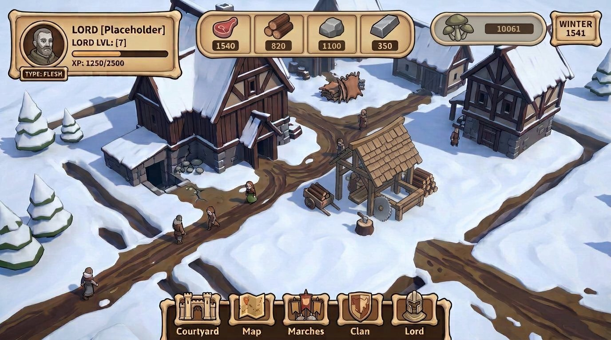

{kind=link}
Профиль вместо боевых шкал
Портрет, имя и уровень; полоса опыта подписана как XP/опыт. Не добавлять HP, здоровье, энергию, выносливость или ману.
The Dead Lords · Bone-Wood · refinement of option 08
Вариант №08 — визуальная основа. Здесь сохранены светлые костяно-пергаментные панели, тёплое дерево и идея ресурсной ячейки, но показано обычное состояние двора, а не строительный экран.

Портрет, имя и уровень; полоса опыта подписана как XP/опыт. Не добавлять HP, здоровье, энергию, выносливость или ману.
Мясо, дерево, камень, металл и грибы. Грибы — отдельная пятая ячейка с грибной пиктограммой и запасом, не «исследования» и не еда.
На idle-сцене нет каталога, выбранной постройки, инспектора, призрака, footprint или сетки. Строительный режим — отдельное состояние.
Следующая полировка: подписать XP так, чтобы её полоса не напоминала здоровье; дать грибной ячейке ясное название при сохранении отдельного статуса; проверить, что лесопилка читается как завершённое здание. Полный список предложений и ограничений — в дизайн-предложении.